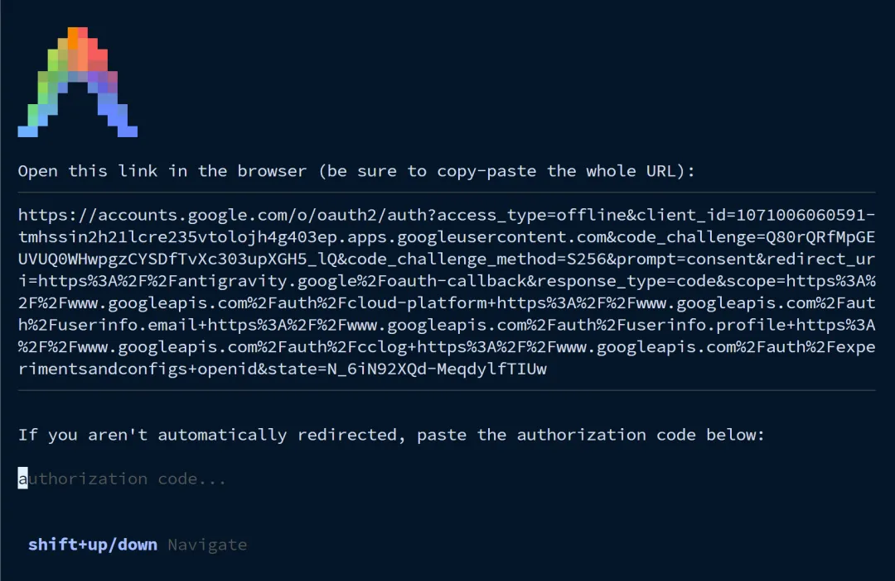
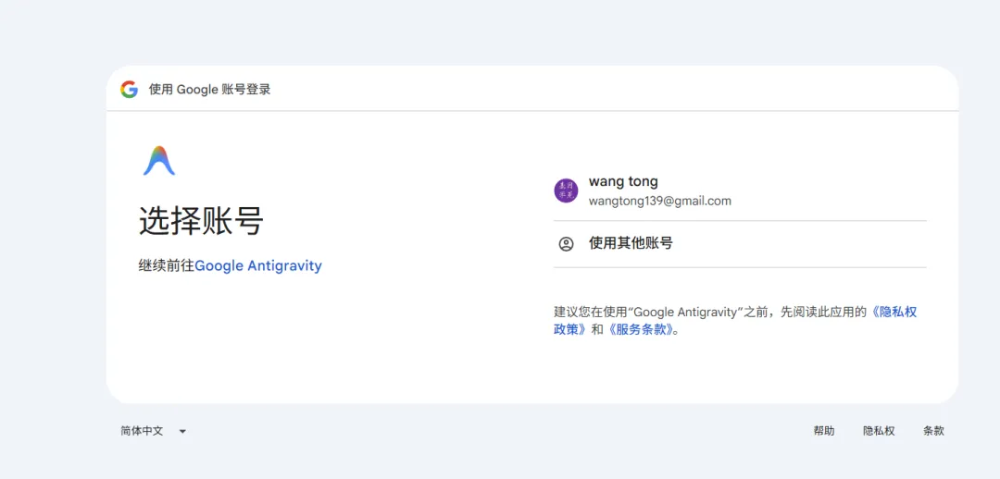
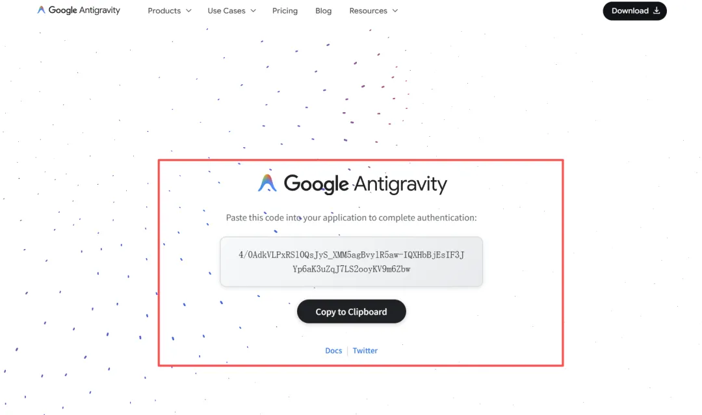
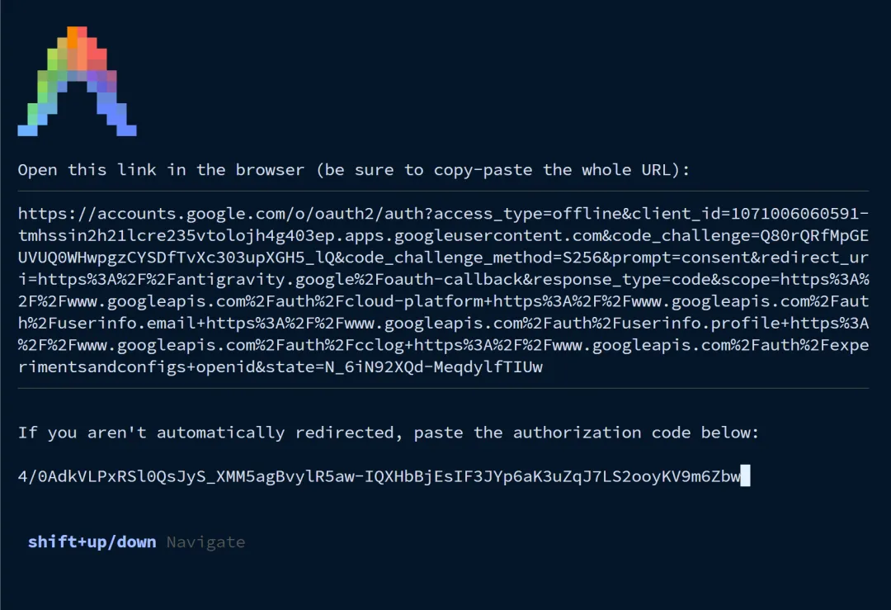
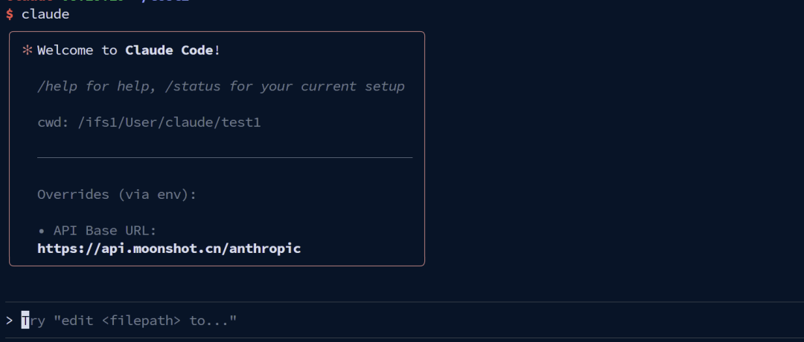
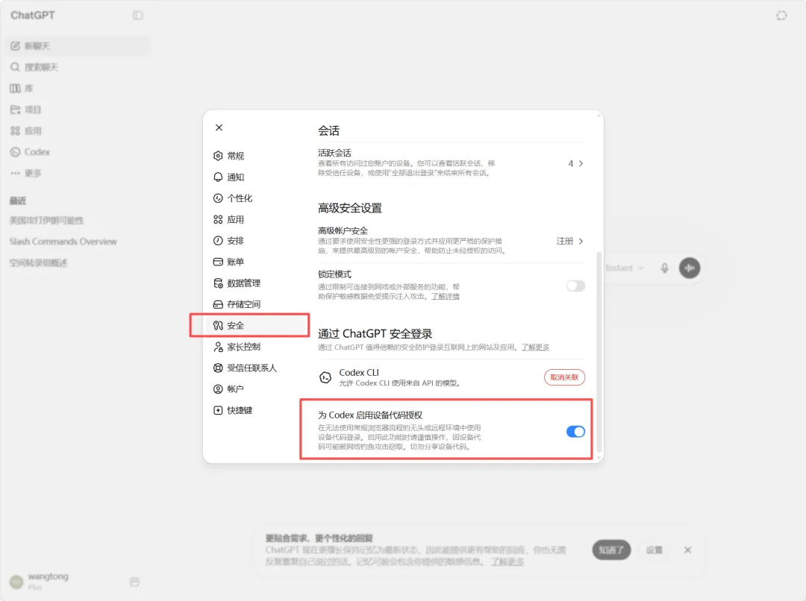

2026 版 · 从登录、传文件到软件环境与 AI 工具
目前我们已经为服务器配置了常用AI工具，包括Claude Code， Codex，Gemini Cli以及Qwen Coder。用户只需要拥有自己的API key，简单配置即可使用。
很多AI工具网页版使用是免费的，如果通过API使用则需要付费。
服务器有国际专线，可以使用国外AI工具，但需要自己单独访问外网购买API。
1 首先通过科学上网访问Google AI Studio，登录google账户。

2 获取API密钥

3 将密钥添加到.bashrc配置中
#请将YOUR_GEMINI_API_KEY替换为自己的api_key
echo 'export GEMINI_API_KEY="YOUR_GEMINI_API_KEY"' >> ~/.bashrc
source ~/.bashrc
4 开启Gemini 3模型
目前Genimi3在gemini cli中需要单独开启，首先在命令界面选择设置/settings。然后将Preview Features设置为true。这样就开启了Gemini 3。

退出重新登录，然后通过/model选项开启gemini 3 pro模型。
由于这些命令行都需要接入API，因此需要购买API。目前国产主流大模型基本上都兼容claude code API，其实各家大模型都兼容OpenAI定义的API格式。我们可以自由选择DeepSeek，Kimi，GLM，Qwen，只需要购买API，然后配上每家模型的地址就行。这里我们以智谱GLM4.6为例，选择智谱GLM是因为价格便宜，支持包月模式，比单纯使用API用起来划算。
1、首先，登录智谱大语言模型平台，
链接：https://www.bigmodel.cn/claude-code?ic=EVALLASW61
2、注册账号，购买模型，目前有一个包季60元的比较适合，每 5 小时最多约 120 次 prompts，也就是1天能使用240次左右。

3、购买完成之后获取API key。
配置AI工具
配置环境，将购买的API添加到配置文件中。详细可以观看GLM官方文档。
https://docs.bigmodel.cn/cn/guide/develop/claude
方法一：自动配置
curl -O "https://cdn.bigmodel.cn/install/claude_code_env.sh" && bash ./claude_code_env.sh运行该脚本，等到需要输入API的地方输入API即可。
方法二：手动配置
修改`\~/.claude/settings.json` 文件，将your_zhipu_api_key修改为APIkey即可。
{
"env": {
"ANTHROPIC_AUTH_TOKEN": "your_zhipu_api_key",
"ANTHROPIC_BASE_URL": "https://open.bigmodel.cn/api/anthropic",
"API_TIMEOUT_MS": "3000000",
"CLAUDE_CODE_DISABLE_NONESSENTIAL_TRAFFIC": 1
}
}然后启动claude code，选择使用API方式就可以使用了。

其他模型使用方法更加简单，只需要将变量添加到.bashrc文件中即可。例如DeepSeek。
# 将${DEEPSEEK_API_KEY}更换为自己的API key
export ANTHROPIC_BASE_URL=https://api.deepseek.com/anthropic
export ANTHROPIC_AUTH_TOKEN=${DEEPSEEK_API_KEY}
export API_TIMEOUT_MS=600000
export ANTHROPIC_MODEL=deepseek-chat
export ANTHROPIC_SMALL_FAST_MODEL=deepseek-chat
export CLAUDE_CODE_DISABLE_NONESSENTIAL_TRAFFIC=1